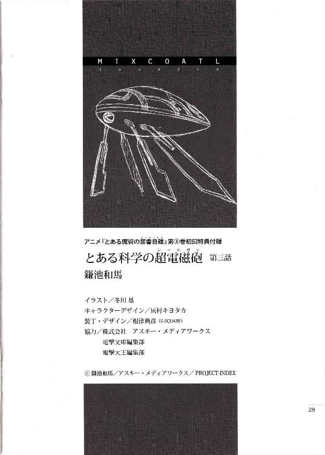
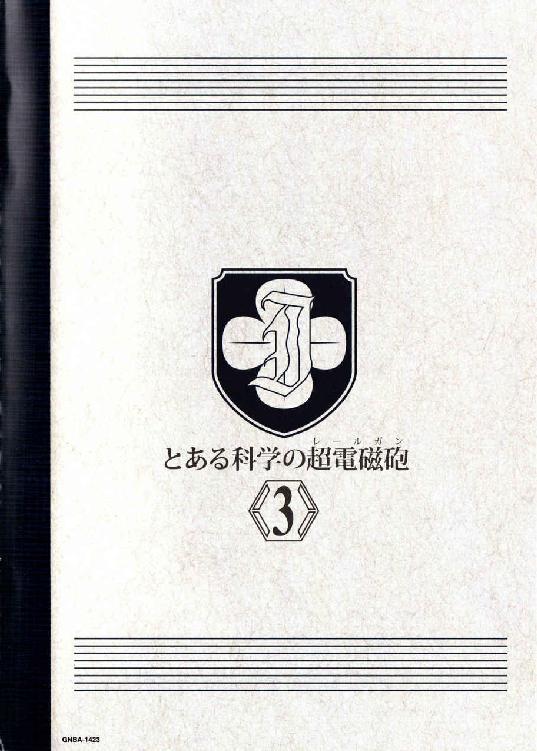

| [鎌池和馬] とある科学の超電磁砲3 | |
| 鎌池和馬 | |
| (2015) | |
|
アニメ『とある魔術の禁書目録』
第③巻初回特典付録
|
とある科学の超電磁砲
第三話
一夜明けて、青一色の空には再び真夏真っ白の太陽が。
カッ!! と降り注ぐ陽射しを見ると、本当は今が九月である事を忘れそうになる。
ピンク色の花柄ワンピース水着をまとって、浜辺で爆裂シャイニング太陽を見上げていた初春飾利は、ふとこんな声を聞いた。
「やーい初春。そんな所でたそがれていないで、さっさとこっち来んかいこの真夏少女」
「佐天さんったら。真夏少女とか訳の分からない呼び方しないでくださいよー」
初春がそっちを見ると、業を煮やしたのか向こうから近づいてきた佐天涙子は、
「うむ。昨日一日遊んだおかげで、すっかり日焼けしているようだにゃん。どれどれ、この匠、佐天さんに日焼けの健康的ビフォーとアフターを見せてみたまえ」
「ちょっ、やっ!? 水着の肩紐を引っ張らないでくださいよっ!!真夏少女ってそういう意味だったんですか!?」
初春は抗議するが、佐天は初春の水着をびよーんと伸ばし、そこから見える乳白色と小麦色のラインをじーっと眺めている。
「あたしは髪が長いから、ボケーッと突っ立っていると髪に隠れた部分が汚く残る訳よ。だから強めの日焼け止めを使ったんだけど、なんか防御力が強すぎて真っ白でさー。これもこれでつまんないし、今日はどうすっかな。髪をアップにして、私もちょっと焼いてみようかなー」
「ちょ、ちょっと！ 勝手に褐色の所をペリペリ剥かないで！きっ、汚い！かなりボロボロの仕上がりになっていますよ佐天さん!!」
「大夫夫だ！ 今日もいっぱい遊んでいっぱい焼き直せ!!」
がっはっはー、と佐天が笑っていると、そこヘ美琴がやってきた。朝食は一緒に食べたのだが、一度ホテルで解散して、再び浜辺に集合する事になったのだ。
「おっすー。いやー悪いわね。ちょっとばっかし手問取っちゃって」
「あたしらは構いませんけど......ありゃ？ 白井さんは一緒じゃなかったんですか？」
「そうそう、それそれ。あいつのエロ水着があまりにも破壊力がデカすぎて困りものだったからさ、あいつの手荷物全部ひっくり返して、少しでも無難な水着を持ってないのか調べてやったのよ。そしたらやっぱりあったのよね、フツーの水着」
「とっ、という事は!?」
「そんな訳でぇ!! 生まれ変わってまっとうになった地味水着のご登場でぇーす!!」
ズバァ!! と美琴が腕を振ってあらぬ方向を指し示すと、そこには何ともつまらない表情を浮かべている白井黒子が。着ている水着も、スクール水着と同程度の露出度しかない、白っぽい色のワンピース型水着だった。何本か直線的なラインが引いてあるものの、むしろラインしかねえよ的な昨日のバカ水着に比べれば十分にまともな領域だ。
しかし、むしろ初春と佐天は仰け反った。
二人はまるでゲロでも吐きそうな顔で、
「にっ、似合わない!! なっ、何故でしょう。白井さんがまともな水着を着ている事がここまで違和感を与えてくるものだとは......ッ!?」
「野暮ったいにもほどがある!! 商店街の安っぽい福袋に入っていそうな感じだなぁこりゃあ!?」
日本のＳＡＭＵＲＡＩ白井黒子はすっかり有名人になったらしく、周囲の外国人（男）からも『なんだ、今日は地味じゃねえか』『馬鹿野郎、あれが普通なんだ』『俺達の感覚まで引きずるとは、やはり日本の武士道とは恐ろしい』などとガッカリ的ざわめきが広がっている。
むぐぐぐぐ、と白井は歯軋りし、
「だっ、だからこんなものは着たくなかったのに!!というか地味水着を着てガッカリされるなら、素直に派手な水着を着たって良いじゃありませんの!?」
頭から湯気を出して叫ぶ白井だったが、美琴は勝ち誇った笑顔だし初春と佐天はドン引きだ。そしてついに堪忍袋の緒が切れた白井黒子は、最終兵器に手を伸ばす。
「どっせぇぇーい!! 秘密のスイッチオン!!」
「なっ!?」
「ま、まさかここから変形合体して究極のエロ水着に──ッ!?って、あれ？」
思わず身構える三人だったが、別に白井の水着はひとりでにスパスパ切れて肌色になったりはしない。
ただ、白い水着は外布と内布の二重構造になっていたらしく、外布に意図的に入っていた切り込みが操作され、結果的に内布の青い色彩が、白い水着に模様を描いていく。
直後、
「うっ、うぐっ!?」
「な、え、ちょ、こ、これは......ッ!!」
「意味が分かんないけど、何故か白井さんがとてつもなくセクシーに見える......ッ!?」
ボン!! と美琴、初春、佐天の三人の顔が真っ赤に染まる。そう、白井の水着は相変わらずの野暮ったい、子供からおばあちゃんまでご安心な白のワンピースタイプ。野暮ったさ極まりない白の一着は、露出なんてほとんどないガッカリ水着に他ならないはずだ。
なのに、
「ふっ。お姉様が悪いんですのよ？ この最終兵器だけは使いたくなかったのに、今日は無理矢理これを着ろと押し付けてくるから」
「ぐっ、ぐふぅ......その謎の水着の正体は、い、一体......？」
「これは学園都市の科学技術の粋を集め、三万八〇〇〇種の動物の求愛行動を参考に設計された、究極の一品ですわ。生物が生物として最もセクシーと感じるものを片っ端からかき集めた、老若男女どころか鳥獣魚虫まで問答無用で発情させる試作型セックスアピール水着ですのよォォおおおおおおおおおおおおッ!!」
「いや、ド派手な求愛行動って、オスの方が多くなかったっけ......？」
「ツッコミ封じの求愛ボンバーッ!!」
「むぎゃああああああああああッ!?」
ズバァーン!! と求愛効果を発揮する水着を見て絶叫する美琴。どうにか力が抜けるのを堪えていたが、どうも白井が着ているのは単なるラインの視覚的効果だけではなく、内蔵された小型スピーカーや布地に織り交ぜられたフェロモン芳香粒（電気散布式）まで使い、五感を多角的に攻めるような極悪水着らしい。五感対応型というのなら、おそらく舐めれば求愛味、触れば求愛感触であるはず。いや、もはや得体の知れない超技術で第六感的求愛の領域にまで踏み込んでいるかもしれない。
という事は、
「あふん......。何だか着ているわたくしまでふらふらしてきましたわー......」
「ぐわあっ！ 爆心地に立ってる馬鹿が一番デカいダメージを!?ちょ、こら、黒子！せめてどこに停止スイッチあるのか教えてから倒れなさい!!マジで浜辺に無尽蔵な求愛の嵐を巻き起こす気かアンタ!?」
心なしか、美琴の視界がぼわぼわぼわーんと薄いピンク色に染まるような幻覚まで見えてきた。この戦術級求愛爆弾をこれ以上放置したらお馬鹿ニュースとして報道されかねない。
「おっ、お姉様......」
「何よ黒子!? い、良いからスイッチ！ さっさと機能を止めないと、無理矢理水着を引っ剥がしてでもこのほわほわ効果を叩き壊すわよ!!」
「......、えへ」
「ちょ、ちょっと、ナニ笑ってんだアンタ。何でいきなり唇を真一文字に引き結んで黙秘モードになってんのよ!?良いから早く!!もう昨日のエロ水着でも何でも着て良いから、とにかくこの新世代のハイテク兵器をどうにかしろーっ!!」
結局、美琴はぐったりしまま黙秘を決め込んだ白井の水着のあちこちを探り、何とか停止スイッチを発見して事なきを得た。
砂浜の佐天は、重たいため息を吐く。
（ものすごく幸せそうな顔だったなぁ。白井さん......）
背中を蹴飛ばされてホテルヘ帰って行った白井黒子の表情を思い出す佐天。もう未来水着の効果は消えたはずだが、何だかまだ頭の中をかき回されたみたいな変な感覚が少しだけ残っている。
「ういはるー。あたし、ちょっと喉が渇いたからジュースでも買ってくるよ」
「そ、そうですか。私はもうちょっと体を休めたいので、その辺で寝っ転がって肌を焼いてますよー......」
初春のヘロヘロした返事を聞きながら、佐天は人工的な浜辺から、煉瓦状の細い遊歩道へと歩いていく。
（それにしても......）
てくてく一人で歩きながら、佐天は考え事をする。
（昨日のあれ、一体何だったんだろう？）
いつも能天気に見えるかもしれないが、いや実際に佐天涙子は基本的に能天気なのだが、それでもやっぱり何も考えていない訳ではないのだ。学芸都市の中心部にあった格納庫のような空間と、壊されたトビウオみたいな機体。そして、そこで繰り広げられた美琴と係員オリーブの応酬。どうやら彼女達の間では何らかの決着がついたようだが、一人置いてきぼりの佐天には何が何だか分からないし、分からないままだとちっとも安心できない。
（ホテルに戻る途中で御坂さんは『考えなしに揉めても教師がやかましいし、他の学生にも迷惑かけるかもしれない。変なトラブル起こして広域社会見学が潰れちゃったらヤバいし、あんまり騒がないでおこう』みたいな事を言ってたけど......。御坂さん、何のためにあそこに入ったんだろ？）
実を言うと、昨夜はちょっと寝不足だったのだ。馬鹿馬鹿しいと思われるかもしれないが、いつ窓ガラスがガシャーンと割れて、映画に出てくる黒一色の特殊部隊みたいなのがロープを使って突入してくるかと思うと気が気ではなかったのだ。
しかし、蓋を開けてみれば何にもなし。
空は青いし海も青い。そして佐天涙子は相変わらずの水着だった。
（御坂さんもとりあえず静観って感じみたいだし......あたしみたいなのがあれこれ悩んでも何も進展しないのは分かってるんだけどなぁ）
はぁ、と息を吐きながら、佐天はぐじぐじとした悩みをひとまず頭の片隅へ追いやる。
この辺りのエリアの景観モデルはハワイかグアムなのか、海岸線に沿って緩やかなカーブを描く遊歩道に面して、背の高いヤシの木が街路樹のように植えられている。ちょっと歩くと、フルーツや牛乳をその場でジューサーに突っ込んでドリンクにしてくれるタイプの露店が見つかる。基本的にはキャンピングカーを改装したような屋台なのだが、砂浜を走る事も考えているためか、足回りがオフロードマシンのようにやたらとゴツい。
佐天は英語と日本語と中国語で書かれたメニュー一覧に目をやりながら、
（やっぱ基本はバナナと牛乳のコンビネーションかなぁ。あ、でもバ二ラってのが別枠であるな。んん？こっちのココナツってのはヤシの実だっけ。うちにも『ヤシの実サイダー』とかあった気がするけど、本場のヤシってどんな味がするんだろ......って、ぶっ!?素知らぬ顔でナタデココとか売ってる!!）
色々懐かしい物も売っていたが、なんだかんだで『なんとなく南国っぽい』という極めてアバウトな理由から、ヤシの実のジュースを選択する佐天。首に引っ掛けたＩＣカードを使って清算すると、腕毛のものすごいワイルドなおっさんからカップを受け取る。
（さーてと。どんな味がするのかねー本物のヤシの実）
初春の待つ浜辺に帰る道すがら、ストローを使ってカップの中身をぐるぐるかき混ぜる。
その時だった。
ガサリ、と近くの茂みが揺れた。遊歩道に等間隔で並ぶヤシの木とヤシの木の奥に、さらに短い間隔で植えてある背の低い木だ。道路、ヤシの木、低い木が、バームクーヘンみたいに走っている事になる。その地面に植わった緑色のアフロみたいな茂みが、佐天の見ている前でガサガサモソモソと蠢いているのだ。
不思議なものを見た時の人間の反応は、大雑把に考えて二種類だろう。
警戒して後ろへ下がるか、興味を持って前へ進むか。
佐天涙子という少女は思いっきり後者だった。
（なっ、なに？ なになになになになんだこれなんだなんなんだ？）
彼女は遊歩道から外れ、少し奥にある巨大なアフロ茂みをちょっと掻き分けてみる。
直後、
アフロの中から小麦色の腕が二木、ニョッキィ!!と突き出てきた。佐天がリアクションを取るよりも早く、二本の腕は佐天の腕と腰を掴むと、アフロの内側へと引きずり込んでいく。
「どわわわわわひぁッ!? ちくしょっ、テメ、ジュースが!?結局本場のヤシの実がどんな味だったか分からないままじゃん!!」
バランスを崩してズシャーッ!! と転んだ途端にカップの中身が全て砂の上へ。大地に飲み干されていくヤシの実ジュースに、佐天は思わずこんな事をした犯人の方を睨みつけてしまう。
しかし、それ以上の文句は言えなかった。
褐色の腕の持ち主は、何やら得体の知れない投げ技を使って、すでに転んでいる佐天をさらに強引に投げ飛ばす。背中から砂浜に転がった佐天の上へ、褐色の人物が馬乗りになった。太股を使って佐天の両腕の動きを固定し、さらに小麦色の腕を使って佐天の口を容赦なく塞いだ。
「むがっ!?」
「......『係員』ではない。チッ、ただの観光客を巻き込んだか。ヤツらをぶちのめして衣服を奪う算段だったんだがな......」
どこかの国の言葉でボソッと呟いたのは、高校生ぐらいの歳の少女だった。肩まである黒い髪はウェーブがかかっていて、瞳の色も突き刺すように強い黒。褐色の肌は、引き締まったラインをより強調するように、太陽の下にさらされている。
褐色の少女は、佐天の口に手を当てたまま、今度は日本語でこう言った。
「騒げば殺す」
それを開いた佐天涙子の反応はシンプルだった。
がぶり、と。
自分の口を塞ぐ褐色の掌に、佐天は小さな口で噛みついたのだ。
「ぐおっ!?」
褐色の少女はあまり女の子らしくない声を出すと、掌の痛みに思わず佐天の口から手を離す。すると、馬乗りにされた佐天は口を大きく開けて、
「だっ、誰かー助けてー強盗でーすって英語でなんて言うんだ!?とっ、とにかくヘルプーっ!!何だかとってもピンチでーす!!」
「ちょ、騒げば殺すと言っただろう!? くそ、もう、口を潰......痛って!!噛むな噛むな馬鹿野郎!!」
周囲をキョロキョロと見回しながら必死に佐天の口を手で塞ごうとするものの、そのたびにトラバサミのように口で応戦されて手を焼く褐色の少女。二回、三回と噛みつかれて流石に頭にきたのか、少女は片手で白い砂を掴むと、それを叫び続ける佐天のロヘとねじ込んでいく。
「もがもがむぐーっ!?」
「......だっ、黙らないと口の中をいっばいにするぞ」
褐色の少女に言われて、ようやく黙る佐天。
ガハゴホと咳き込んで砂を吐き出す佐天だが、褐色の少女は馬乗りをやめない。
「うえっ、げふっ。い、一体、何なのよ。アンタ......？」
相変わらず馬乗りにされたまま、微妙に褐色の少女の太股辺りが蒸れると思いつつも、佐天は唖然として見上げてしまう。
「昨日、『雲海の蛇』がこの近くに突っ込んだだろう」
「？」
「科学の飛行機と戦っていた、我々の乗り物だ。昨日も浜辺に一機突っ込んだだろう。あれに乗っていた仲間を助けるためにやってきたは良いが、私の使っていた一人乗りの偵察機は怪我人に貸してしまってな。おかげで今度は私が逃げられなくなった」
ややふてくされたように、ヤケクソ気味に、褐色の少女は言う。
ふんと顔を逸らすと、少女の耳についた羽飾りがふわりと揺れる。
（......だから、完璧に、意味不明だっつーの......）
訳が分からないまま、佐天は馬乗り少女の顔を見上げ続けるしかない。
元々、この学芸都市は基本的にみんな水着で過ごすというふざけた空間だが、その学芸都市の中にあっても、褐色の少女の格好は浮いていた。と言っても、別に白井黒子のエロ水着のように、極端に肌の露出が激しいのではない。
なんというか、インディアンとかの民族衣装っぽい服をまとっているのだ。それも演劇やコスプレに使われるテカテカ素材のものではなく、長年の付き合いで色が褪せたり染みがついたりした、正真正銘の実用型の衣服である。
なんだかんだで、水着と言えば合成繊維だらけの科学テイスト。そういった中で、褐色の少女の民族衣装はとても目立って見えてしまうのだった。
「......くそ、方針を変えるか。おい、協力してもらうぞ」
褐色の少女は、佐天を見下ろしたままそう言った。
「この格好のまま表を歩くと面倒な『係員』を呼び寄せる。だから、その、群衆の中に隠れるには、お前が着ているような水着が必要なんだ」
「何であたしが......」
「何なら、ここでお前が着ているものを奪っても良いんだぞ。お前を殺しておいた方が無難かもしれない」
褐色の少女はそっけない調子で言う。
どこまで本気なのか判断のつかない佐天を放っておいて、少女はさらに続ける。
「私だって何も好き好んで一般人を殺害したいとは思わない。だが、もしもお前が協力を拒んだり、水着を買ってくると言ってそのまま逃走したり、『係員』の所へ駆け込んだりした場合は......。一応言っておくぞ。ろくでもない事になりたくなければ、素直に従っておく事だ」
「ぶー」
と、文字通りのブーイングをかました佐天だったが、その時、彼女の喉元にヒヤリとしたものが押し付けられた。
褐色の少女の腕が伸びている。彼女は何かを握っているようだが、その物体は喉元にあるため、佐天からでは全く見えない。
「黒曜石のナイフは珍しいか？ しかし、これ一本あれば皮膚の剥離から内臓の摘出、骨についた筋肉や脂肪を削ぎ落とす事まで、とりあえず一通り実行できるぞ。こいつは元々、人肉を捌くための刃物なのだからな」
「......マジ？」
「使われたくなかったら言う事を聞け。こいつは痛みなく切断するようには設計されていない。肉を切られるのは痛いぞ。分かるな？」
かくかくと首を縦に振る佐天。
それを見て、ようやく褐色の少女は佐天の上から、横へどいた。
佐天は背中や尻についた砂を払いながら、内心ではムカッムカしている訳だが、
「くっそー......。分かったわよ、水着買ってくりゃ良いんでしょ。で、スリーサイズは？」
「八四、五八、八一」
（ちくしょう。一個も勝ててない......）
「何を勝手にどんよりしている？ 色にはこだわらないが、動きやすいものを選んで来てくれ」
「へいへい」
アフロのような茂みを掻き分けて遊歩道の方ヘ戻る佐天は、
「そういや、アンタの名前って何だっけ？」
「ショチトルだ」
ふうん、と適当に返事をした佐天は、そこでふと、
（ん？ カムフラージュ用の水着がないと、学芸都市の『係員』にバレちやうって事は......今は大っぴらに表を歩けない？）
「ぐおおーっ!! 逃げるぜ逃げるぜ安全地帯まで猛ダッシュだギュ!?」
「そうすると思ったぞ馬鹿野郎!!」
再び褐色の手が伸びてきてアフロの中へ引きずり込まれる佐天涙子。
ショチトルと名乗った少女は俯いたまま暗い笑みを浮かべ、こんな事を言った。
「......何か勘違いをしているようだが、水着があった方が観光客に紛れられる分『やりやすい』というだけで、その気になれば完全な隠密として物陰から物陰へと移動しながら、逃げるお前を追う事もできる。ただ、色々とリスクを被るので、もっと安全な策を講じるとしよう」
「ふははそんな不穏な言葉を聞いてこのあたしが黙っているとふぐおっ!?」
佐天の言葉が途切れたのは、ショチトルが懐から何かを取り出すと、それを佐天の鼻の穴に突っ込んだからだ。ずずーっという嫌な感触が鼻の奥まで伝わってくる。
「ぐおおおおおおっ!?」
思わず自分の顔に手を当てた佐天だが、謎の物体は鼻の中へ完全に埋没しているらしく、鼻の下の辺りをゴシゴシ擦っても感触らしい感触は全くない。この場で取り出すのは難しそうだ。
「乙女の鼻に何しやがる!! っつか何入れた!?」
「説明して欲しいか？ こういうものだ」
ショチトルの手にあるのは、綿棒を半分ぐらいの長さに折ったような、変な棒だ。そして彼女はもう片方の手でボタンのようなものを押した。途端に、ジャゴッ!!という音と共に、先端が小さなトゲだらけになった挙げ句、電動歯ブラシのように振動する変な棒。
「本来の用途は違うんだが、最近ではもっぱら拷問の道具として大活躍している。鼻の粘膜は敏感だぞ。丸ごと削り取られると大層痛いそうだ」
「......、」
さぁーっと血の気が引く佐天に、ショチトルはこう言った。
「鼻に突っ込んだまま起動したら大変だな？ 大変になりたくなかったら水着を買って来い。おっと、無暗に引き抜こうとするなよ。こいつは遠隔操作でいつでも起動できるからな」
そんなこんなで、遠い異国の地でパシリにされてしまった佐天涙子。
学芸都市内の大型ショッピングモールヘやってきた彼女は、変な恨みを買わない内にさっさと安い水着を買って引き返すかー、とやる気ゼロでグニョグニョしていたのだが、
「水着売り場で何をやっているの」
「ん？ 何だ、胡散臭い映画監督じゃないですか」
相変わらず爆乳なビバリー＝シースルーに、佐天は適当に返事した。彼女はミーハーだが、興味のないジャンルの有名人にはあまりピンと来ないのだ。
ビバリーは佐天の赤ビキニをジロジロ見ながら、
「もう今着ているものには飽きてしまったとか？」
「ええっと、違いますよ」
下手に事情を話すとぶっ飛ばされそうなのでお茶を濁すしかない。
「知り合いの水着の紐がブチッと千切れちゃったから、緊急処置であたしが出動してるんです。連れは今も茂みの中でぶるぶるしてますよ」
「ありゃま。それは可哀想に」
「全然ですよ。もー、なんつーか傍若無人の極みでさー。いっそ復讐するためにド派手で涙が出てくるような悪趣味水着を選んでやろうと思ってんですけど」
「ふうん。ではこういうのはどう？」
「いや、それぐらいじゃ生ぬるいです。せめてこんぐらいは欲しいですね」
「いやいや、ではこっちのは？」
「いやいやいや、破壊力っていうのはこういうのを言うんですってば。だから───」
ショチトルの所属する『組織』は、中南米から様々な人員、既存の科学とは異なる技術が集まって形成されている。そして、『組織』は学芸都市と数年にわたって戦闘を続けている関係にあるのだ。
いわば敵陣ど真ん中に一人きりな褐色少女、ショチトルは、茂みの中に獣のように身を潜めていたが、実は相当気が滅入っていた。
別にこのアフロ状の茂みの陰から一歩も動けない訳ではない。事実、昨日からセキュリティの死角を縫うようにちょこちょこと移動している。......しかし、常に全方向へ注意を向けながら移動するというのは、相当に精神を削り取る。だからこそ、『係員』の衣服を奪うなり、水着を手に入れて観光客に紛れるなりした方が色々と『やりやすい』のだが......。
（......流石は敵地中央。そう簡単に話は進まないか）
仲間の応援はいつ来るのか分からない、『係員』に見つかれば多勢に無勢は確実、先ほど水着を買わせに行った少女にしても、言葉では強気で押したが、実際に逃げられたら打つ手はない。そう、遠隔操作で少女に報復する事はできても、それではただの『共倒れ』なのだ。
おまけに身を隠す過程でショチトル自身も多少の傷を負っているし、丸一日、ほぼ何も食べていない。
孤立無援の中、ショチトルは手持ちの武器を確認する。
といっても、武器らしい武器はほとんどない。
元々、ショチトルは戦闘要員ではない。彼女の役割は海上に墜落したり、戦闘不能になった『雲海の蛇』からパイロットを回収したりする事である。
そのショチトルがこんな所までやってきたのは、前日に味方の『雲海の蛇』の一機が学芸都市の浜辺に突っ込んで、そこから脱出したパイロットが救難信号を送ってきたからだ。
一人乗りの偵察機を操っていたショチトルは当初、怪我人の居場所を確かめてから、救護要員に位置情報を送る手はずだった。しかしパイロットの傷は思ったよりもひどく、早急にショチトル達の『本拠地』へ連れ帰る必要があった。そこで、ショチトルは自分が移動に使っていた、主に偵察に使う一人乗りの超小型機体を貸す事になったのだ。おかげで今度はショチトルが救援待ちである。
「......、」
黒曜石で作られたナイフに目を落として、ショチトルは小さく息を吐いた。いざ『係員』と戦う事になれば、その時は覚悟を決めた方が良いかもしれない、と彼女が改めて気を引き締めた所で、
「うおーっす。待っていたかい子猫ちゃん、この佐天さんが水着のお土産買ってきたよー......ぐふっ!?」
馬鹿が帰ってきたので口を塞いで茂みの中へ引きずりこむ。
ショチトルは佐天の腕から、忌々しい学芸都市のロゴが入ったビニール製の袋を奪い取る。
佐天は唇を尖らせながら、
「おおい。さっきから色々と横柄じゃないかね」
「やかましいな」
「っつか、鼻に突っ込んだ例のアレをどうにかしてくれんかね」
「......まぁ、良いだろう」
ショチトルが口の中で何かブツブツ言うと、佐天は慌てて鼻を押さえた。おそらく鼻水でも垂れたかと勘違いしたのだろう。しかし出てきたのは鼻水ではなく例の細い棒だ。
ショチトルはくだらなさそうな調子で、
「着替えるからあっちに行ってろ」
「へいへい。うふふ」
「何だ？ 何を笑っている？」
「いえいえ何でも。ぐふふ」
再び茂みから遊歩道の方へ出ていく佐天を不気味そうに眺めるショチトルは、やがて水着の入ったビニール袋の口を開けて、その中をごそごそと漁る。
そして、
「終わったかーい？」
佐天涙子は緑色のアフロみたいな茂みの方へ、のんびりした声を放つ。
返事はない。ただしショチトルの体の震えを示すように、茂み全体がブルブルガサガサと小刻みに振動している。
佐天は無視して、もう一回言った。
「終わったかーい？ 出てこねーとこっちから突撃するぞー」
「......ん、だ......」
ボソリ、という声が茂みの方から聞こえてきた。
佐天が『はにゃ？』と超わざとらしく首を傾げた瞬間、
「なんッッッだコレはァァあああああああああああああああああああああああ!?」
ズバァ!! と緑色のアフロの中から二本の腕が飛び出すと、南の海の馬鹿デカいイソギンチャクのように佐天が茂みの中へと呑み込まれていく。
意外に小枝や葉っぱがチクチクして痛いんだこれ、と佐天が閉口していると、茂みの向こうには仁王立ち状態のショチトルが。
その格好を見て、佐天涙子は思わずプッと笑みをこぼす。
「あーあ......ホントに着ちゃったんだ。そのエロ水着......」
「自分で買って来ておいてその台詞か!? なんっだ！これは！と聞いているんだ!!アホ臭いにもほどがある！自分でレジに持っていく時、恥ずかしくなかったのか!?」
そう叫ぶショチトルが着ているのは、俗に言うビキニの水着だ。
ただし細い紐全体に、数珠のように色とりどりのビーズが留められていて、ビキニの布地もギラッギラのラメ仕様。胸を覆うカップ部分は布ではなく、赤青黄色のビーズを繋げた紐のような物が、渦巻きのように際どい部分だけを隠している感じなのだ。おかげでショチトルの下乳はほぼフルオープン状態である。
佐天は片手を口に当て、プププと笑みを広げながら、
「むふ、それはジュエリービキニと言うのだよ勉強したまえショチトル君。ほれほれ、どことなくサンバ系の踊り子さんっぽく見えるだろう!?」
「ふっ、ふざ、ふざけりゅにゃ......ッ!!」
「だぁーほれほれ。あんまり動くとポロンと出ちゃうよ？私のジップアップビキニと違って、肌に貼りつく素材とかも使っていないから思いっきり大公開されちゃうかもしんないし。......それと海に入って泳ごうとするなよ。液体の抵抗力で全部外れちゃうから」
「水に入れない水着という時点で何か疑問に感じる事はないのか!!」
怒りと羞恥心で顔を真っ赤にし、ふーふーと荒い息を吐くショチトル。どうやら今すぐ佐天に襲いかかりたいようだが、あまりにもジュエリービキニの『引っ掛かり』が危ういため、下手に暴れる事もできないらしい。
しばし中遙半端に逃げ腰で両手を振り上げていたショチトルは、やがて形勢の不利を感じたのか、佐天へ殴りかかるのは諦めたようだ。
「......おい。ちょっと付き合え」
「えー？ もう水着は買ってやったじゃん」
「従わないと相打ち覚悟でお前の水着を毟り取りに行くぞ。......二人で一緒に裸のままもつれ合いたいのか？」
低い声で言われてしまうと、迂闊な賭けには出られない佐天涙子である。それに、もう一度変な棒を鼻に差し込まれるのもごめんだし。
という訳で、謎の褐色少女ショチトルに連れ回される形で学芸都市を歩く事になった佐天涙子。ショチトルは特にどこかで買い物をしたいとか、絶叫マシンに乗りたいとか、そういう目的地があって歩いている訳ではないらしい。
ぶらぶらと浜辺やショッピングモールを進むショチトルは、ギリギリと歯を食いしばる。
「（......くそ。施設の一つでも吹き飛ばしたいのに、あまりにも目立ちすぎて破壊工作をするチャンスが全くない......ッ!!）」
着ているド派手な水着のせいか、どこにいても視線が集中していた。太陽の光を受けてキラッキラに輝く極彩色のビーズが『光るものへ思わず目を向けてしまう』生物の構造上、ごくごく自然に男性諸君の目線をビキニの胸や腰へ引き寄せ、暑さと羞恥によって褐色の肌に浮かぶ汗の珠が、単なるビーズとは異なる健康的かつ扇情的な輝きを放つ。
「（......ま、まぁ、目的は一つではない。破壊工作が不可能なら、別の項目を優先させるだけ。実測で敵地の情報を補完しておくか。少しぐらいは収穫がないと、あまりの徒労感に自殺したくなりそうだ）」
「さっきから何をブツブツ言ってんのよ」
「別に。いざとなったら顔を変えてしまえば良いと思っただけだ」
「？」
キョトンとした顔の佐天にそれ以上答えず、スタスタと先を進む。
相変わらずどこに向かって歩いているか良く分からないまま連れ回される佐天は、素人の一般人なりの考えとして、ショチトルは佐天と一緒に歩く事で、一人であちこち探索するより目立たないだろうなぁと思っているんじゃないだろうか、と推測していた。
ただし、
（あは。ものすっごくド派手な水着を選んじゃったし、そもそもあたし、多分昨日の一件で『係員』って人達に思いっきりマークされているような......？）
だらだらだらだらだらだらだらだらー、と全身から嫌な汗を流し続ける佐天に、ショチトルは気づいていないらしい。
人工的な運河で隔てられたいくつかの人工島の内、大雑把に一エリアほどを歩き通すと、ふとショチトルはくびれた腰に両手を当てて、わずかに息を吐いた。
さんざん歩いたショチトル達が戻ってきたのは、佐天がジュエリービキニの水着を買ってきたショッピングモールのすぐ近くだった。
「......まぁ、大体こんなものか」
「何が？」
「地下施設とはいえ、完璧にその痕跡を消す事はできないという話だ。ダクトの数と位置から、大雑把な施設のサイズは分かってきた。......こんなつまらん地下のために、今まで多くの仲間が傷を負ってきたという訳だ」
「......地下、施設......？」
「概ね、実戦とアトラクションの間に生まれる齟齬を埋めるための施設が用意されているんだろう。弾薬庫とかそういったものを一通りな」
ショチトルは忌々しそうに口を動かす。
「ただまぁ、本命の解析・研究を行っている施設本体は、ここではなさそうだ。やはり、街の中央にあるロケット発射場が怪しいな。......ふん、確かこの人工島は、深い海溝の真ん中に部分的に盛り上がった、水深二〇メートル程度の岩場の上に砂や人工物を積み上げて作られたはず。となると、シェルターとして必要な『深さ』を確保する事はできなかったのか。......そうだな。下手に掘り過ぎて、土台の岩場にデカい空洞を作って強度を弱くしたら、学芸都市全体が傾き、沈む恐れもあるからな」
「？？？」
「地中に作るシェルターは強力だが、『深さ』を確保できないのでは逆効果だ。施設そのものに攻撃が直撃しなくても、衝撃によって土砂崩れが起こるリスクが高まるだけだからな。......何より、この国が作ったバンカーバスターは、地中二、三〇メートル下にある基地をも爆破するらしい。それなら、一番重要な施設は、かえって地下には作らない方が、確かに安全だ」
「ショチトル、さっきから何を......？」
「深入りするなよ。分からないままで良い」
その時、佐天涙子の頭上の青空を、複数の白い飛行機雲が引き裂いていった。学芸都市のアクロバットショーを演出する、『エイリアン戦争』のラヴィーゼ飛行隊だ。陸地から海へ向かって一直線に突き進む複数の航空機を見上げて、佐天は間の抜けた声を放つ。
「わー。今日もやってるんだ、あの爆薬アトラクション」
彼女達が立っているのは、浜辺からやや離れた内陸部だ。とはいえ、敷き詰められているのは全体的に白い砂。遊歩道や車両移動用の煉瓦の道路や、ショッピングモールにホテルなどの建物が、きめ細かい砂の上にドカドカ建てられているのだ。
建物と建物の隙間から、はるか遠くに青い海が覗いている。
やがて、ショチトルはポツリと言った。
「やっと来たか」
「？」
佐天が首を傾げた時、凄まじい爆発音が耳を打った。単なるショーとは違う、まるでアクロバット飛行中に不慮の事故が発生したような大音響。ビリビリと痛みを発する鼓膜に、思わず両手で耳を押さえた佐天は、遠くの方で青空を汚すように立ち上る黒い煙を見つけた。
ボン!! という爆音と共に、何かがヒラヒラと飛んできた。空を見上げる限りは小さな欠片のようだったが、実際に砂浜に突き剌さったそれは、全長二〇メートル強の巨大な戦闘機だ。しゅうしゅうと蒸気のような音を立てる物体の正体は、ラヴィーゼ飛行隊が操る機体で、バイロットは脱出した後なのか、コックピットを覆うガラスのキャノピーがなくなっていた。
「な、え、こ、これって......？」
佐天が驚く暇もなかった。
アトラクションだと思う暇すらも。
今度は青空に、白いラインが何本も、何十本も引かれた。先ほどの飛行機雲にも似ているが、もっと細くて、鋭角的で、素早かった。まるで槍のような白い軌跡は、学芸都市のあちこちへ突き刺さると、容赦なく爆発し、建物の壁を破壊し、きめ細かい砂を掘り返し、被害と混乱を撒き散らしていく。
佐天の間近に白い軌跡の一本が落下し、直撃しなかったにも拘らず、佐天はその余波だけで熱い砂の上へ投げ出された。
ショチトルは静かに突っ立ったままだ。
眉一つ動かさず、ゆっくりと空を見上げた彼女は、やがてポツリとこう言った。
「遅かったな」
応じるように、動きがあった。
ドオ!! という轟音と共に、ショチトルのすぐ隣辺りの砂浜が、下から持ち上げられるように爆発した。地中から飛び出したというよりは、地下施設の天井を突き破って現れたという感じだった。その中から現れたのは、昨日アクロバットでラヴィーゼ飛行隊と戦っていたもの。全長五メートルぐらいのカヌーを逆さまにして、上下二つくっつけたような機体。ボディ前方の左右両側に、短い翼と長い翼をそれぞれ一対ずつ装着した、トビウオのような機体だ。
ショチトルはトビウオに向けて、佐天よりも数倍親しげな調子でこう話しかけた。
佐天の分からぬ国の言葉で。
「敵地の実測調査は無駄に終わったか。私の予測では、『本命』の解析・研究は地下のアトラクション準備施設ではなく、街の中央にあるロケット発射場で行われていると思っていたが」
『その予測は正解だ。ただし、一部の大型空調を共有していてな。そこを使って二つの施設の間を行き来できたんだ』
「という事は、踏み込んだんだな。首尾の方はどうだ？」
『とりあえず最低限の破壊目標の撃破には成功。それと、「例のもの」も回収した。しかし、敵本陣の内部構造は予想よりも頑強だ。個人的には、不快感の方が勝っている』
「欲張るなよ。そもそも水上戦用の『雲海の蛇』に乗ったまま、こんな内陸を移動している事が間違っている」
『誰のためだと思っている。道中、骨折でもしてお荷物状態になっているお前を拾えるかもしれないから、無理して乗り上げてきたんだよ』
プシューッ!! と、炭酸飲料のプルタブを開けるような音が聞こえた。上下二つに合わせたようなカヌーの上側が、後部ヘスライドするように開放されていく。
鋭角的な木体の中に乗り込んでいたのは、ショチトルと同じく褐色の肌をした少女だ。歳はショチトルよりわずかに上。歳を取った大人からすれば佐天もひっくるめて全員子供の一言で片付けられてしまう程度でしかないのだろうが、中学生の佐天からすれば、年上である事を意識してしまうぐらいの差はある。
儀礼的な意味があるのか、あるいは機能的なパイロットスーツのつもりなのか、身にまとっているのは初めて会った時のショチトルと全く同じ民族衣装だった。
カヌーに乗った少女は、ショチトルを見て自分の後ろを差す。
「早く乗れ。無理して陸地を歩かせたせいで、四枚の羽はほぼ潰れている。今の性能では、何とか海上を進むのが精一杯だ」
言われ、ショチトルは素直にカヌーの方へと向かう。
「う、あ......」
佐天はその背中を見て、思わず口を開いた。
流石の佐天でも、これが単なるアトラクションショーではない事ぐらいは理解できる。傍から爆発を見ているのではなく、そこに巻き込まれたのだから。そして、ショチトルは爆発の首謀者らしき人物の元へと進もうとしている。
何かを言おうとしたが、佐天の口からは何も出なかった。
ショチトルの方も、一度も佐天の方には振り返らなかった。
カヌーの後部にショチトルの小さな体が収まると、後部方向ヘスライドしていた上側のパーツが、再び元の位置へと戻って閉じた。木と布と黒曜石で作られたトビウオは身震いするように小刻みに振動すると、佐天から遠ざかるように、自重で潰れた四枚の羽を使って砂の上を歩き、そして立ち去っていく。
羽の潰れた『雲海の蛇』は、浜辺の波打ち際から海水に入ると、四枚羽の先端四点を使って機体を水面数センチの位置に浮かび上がらせ、本来通りの高速移動を開始する。
ショチトルの前方で『雲海の蛇』の舵を握る少女・トチトリは、こちらを振り返らないまま言う。
「じゃあ、結局目立った怪我はしなかったんだな」
「単に連絡がつかなかっただけだ。まぁ、わざわざ回収に来てくれた事には感謝するがな」
「よくもまぁあんな所でじっとしていられたものだな」
「数年にわたる戦いを繰り広げた敵地の真ん中か。想像通り、つまらん場所だった」
ショチトルは退屈そうに息を吐き、
「......本部に戻ったらテクパトルのヤツがうるさそうだ」
「まぁ、あの上司も戦力が減るのを恐れているみたいだしな。本気で処罰される可能性は少ないだろう」
トチトリはこちらに顔を向けないが、肩が震えている所を見ると、どうやら笑っているらしい。ショチトルはそんな同僚の仕草に呆れながらも、
「さっきも言っていたが、『例のもの』は回収できたんだな」
「まあね」
トチトリは振り向かないまま頷き、傍らを指差した。
彼女のすぐ横に、無造作に置かれたものがある。ソフトボールぐらいの塊だ。メガネを拭くような柔らかい布で覆われているため外観は分からない。
ショチトルは思わず呟く。
「そうか。ついに我々の手に戻ったんだな......」
「だが、回収できたからと言って、すぐさま起動できる訳じゃない。組み立てや調整なんかでもう少し時間がかかるらしい。それでも、今までに比べれば大きく前進したがね」
「......『太陽の蛇』か」
ショチトルはポツリと呟くように言った。
わずかな沈黙。
やがて、舵を操りながら再びトチトリが口を開く。
「良い子だったな」
「何が？」
「挙動不審の塊みたいなお前のために、わざわざ協力してくれたあの子だよ」
トチトリは真面目くさった口調で言う。
「最後の顔を見たか。頭の中は疑問だらけで、色々尋ねたい事はいっぱいで、それでもお前を傷つけないで質問するにはどうすれば良いのか悩んでいる顔だった。結局、時間切れで言葉が出てくる事はなかったが、間違いなく良い子だったよ。ふざけた街だが、外からはああいう人間も遊びに来ているようだ。それぐらいは認めてやれ」
「......、」
ショチトルからの返事はない。
トチトリもそれ以上は何も言わず、『雲海の蛇』を操って学芸都市の支配圈から離脱していく。
最後に、トチトリはふと思い出したように、
「ところでさ、ショチトル」
「何だ」
「そのド派手な水着、一体どういうつもりなんだ？いくら敵地で群衆に紛れるためとはいえ、また随分と体を張ったものだ。まぁ、ウチの男どもには、良い手土産になるんじゃないか？」
「......学芸都市で、こんな感じの台詞を言った覚えがある」
ショチトルはそっけない口調で、こう告げた。
「何なら、お前が着ている物を奪ってやっても良いんだぞ、とな」
「───ッ!?」
させるかバカやかましい嫌なら一緒に対策考えろ、という少女達の叫び合いと共に、愉快な破壊音が『雲海の蛇』の中から響く。
アニメ『とある魔術の禁書目録』第③巻初回特典付録
とある科学の超電磁砲 第三話
鎌池和馬
イラスト／冬川基
キャラクターデザイン／灰村キヨタ力
装丁・デザイン／根津典彦(G-SQUARE)
協力／株式会社 アスキー・メディアワークス
電撃文庫編集部
電撃大王編集部
Ｃ鎌池和馬／アスキー・メディアワークス/PROJECT-INDEX

